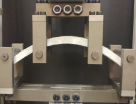
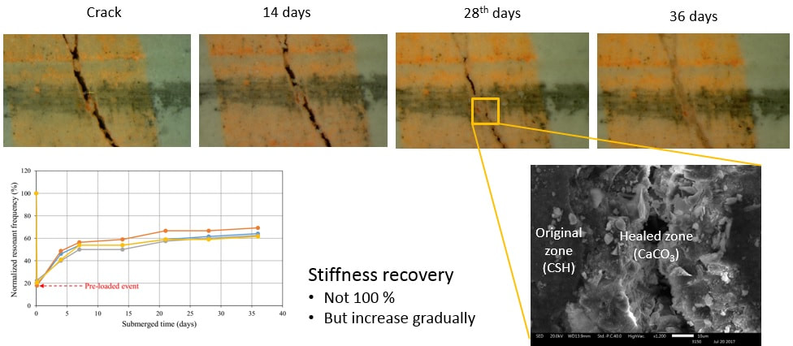
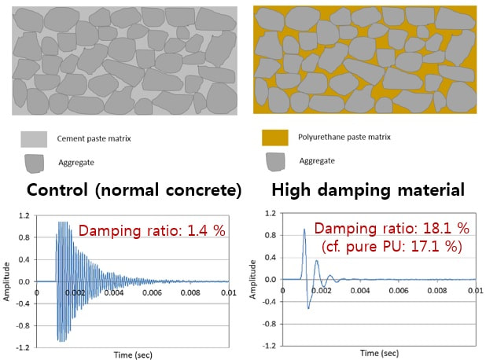

High-Performance Fiber-Reinforced Cementitious Composites
- High-ductile fiber-reinforced concrete — ECC (Engineered Cementitious Composite)
- HDFRAAC — High-ductile fiber-reinforced cement-free (alkali-activated) composite
- UHPC — Ultra-high performance concrete
- Tensile strain capacity up to 22 % (exceeds steel ductility)
- Micromechanics-based fiber bridging analysis
- Fiber distribution evaluation via image processing
- Tensile behavior simulation
- Development of special FRCC for infrastructure applications
Self-Healing Composites
- Crack self-healing phenomenon in green alkali-activated slag-based concrete
- Mineral-based healing agents and superabsorbent polymers (SAP)
- Autogenous healing in high-strength ECC
- Evaluation using modified permeability test methods
- Self-healing of chloride diffusion resistance and steel corrosion
Key goal: drastically reduce lifecycle maintenance costs for concrete structures.
High-Performance Concrete
- Self-compacting concrete (rheological control of cementitious materials)
- Optimal concrete mixture proportioning using artificial intelligence
- Alkali-activated slag binder properties and carbonation
- Low-CO₂ geopolymer composites
- Recycled-fiber-reinforced composites from textile waste
High-Damping Materials
- Polyurethane-based composite
- Concrete incorporating polyurethane-coated aggregates
- Equivalent damping ratio up to 10 % for seismic applications
- Multifunctional building materials and structural systems
Light-Transmitting Concrete
- Embedded optical fiber arrays for natural light transmission
- Architectural applications combining structural and aesthetic functions
- Optimization of fiber geometry and concrete matrix
Image Processing & AI Techniques
- Image processing for crack measurement and fiber distribution evaluation
- Artificial neural networks (ANN) for property prediction
- Genetic algorithms for mix design optimization
- Fuzzy logic and machine learning applications
- AI-assisted concrete surface crack detection
Representative Results

ECC specimen under extreme bending — tensile strain up to 22 %

Self-healing cracks in slag-based composite

Polyurethane-based high-damping concrete composite